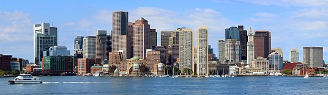

Boston, officially the City of Boston, the capital and most populous city in the Commonwealth of Massachusetts, and is the cultural & financial center of New England in the Northeastern United States, with an area of 48.4 sq mi (125 km2 and a population of 675,647 in 2020. The Greater Boston metropolitan statistical area is the eleventh-largest in the country. 
Boston is one of the United States's oldest municipalities. It was founded on the Shawmut Peninsula in 1630 by Puritan settlers from Boston, Lincolnshire. During the American Revolution, Boston was the location of several key events, including the Boston Massacre, the Boston Tea Party, the hanging of Paul Revere's lantern signal in Old North Church, the Battle of Bunker Hill, and the siege of Boston. Following American independence from Great Britain, the city continued to play an important role as a port, manufacturing hub, and center for education and culture. The city has expanded beyond the original peninsula through land reclamation and municipal annexation. It now attracts many tourists, with Faneuil Hall alone drawing more than 20 million visitors per year. Boston's many firsts include the United States' first public park (Boston Common, 1634), the first public school (Boston Latin School, 1635), the first subway system (Tremont Street subway, 1897), and the first large public library (Boston Public Library, 1848).